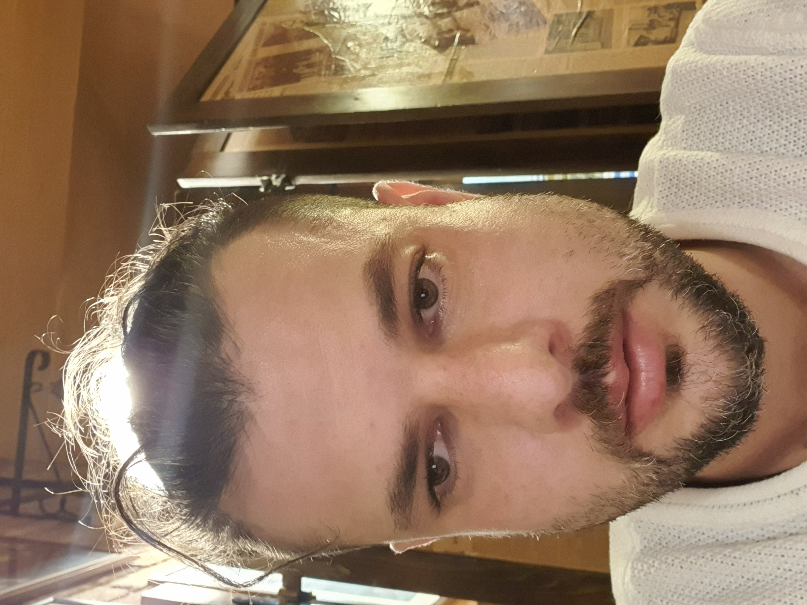

Sono una persona in cammino, proprio come te. Nella mia vita ho attraversato tante esperienze, alcune molto intense e al limite, che mi hanno spogliato di molte maschere. Grazie a questo percorso ho avuto la fortuna di accedere a spazi di enorme consapevolezza, che mi hanno permesso di esplorare parti di me che non conoscevo e da cui ho tratto un beneficio e un benessere profondi.
Oggi non sono qui per venderti verità assolute, lezioni frontali o teorie: io porto semplicemente la mia storia e la mia esperienza. Non credere a una sola parola di quello che dico, metti sempre tutto in discussione.
Creo questi spazi perché io stesso ho bisogno di luoghi veri in cui continuare a imparare e a conoscermi. Il mio intento è offrire contesti semplici e di qualità, dove ognuno sia libero di esplorare ciò che ha dentro, fuori e dentro di sé, attraverso il corpo, la natura e il gioco. Esperienze autentiche, co-create insieme grazie alla partecipazione e all'energia di tutti.
Se ti va di fare un pezzo di strada insieme, io ci sono.
